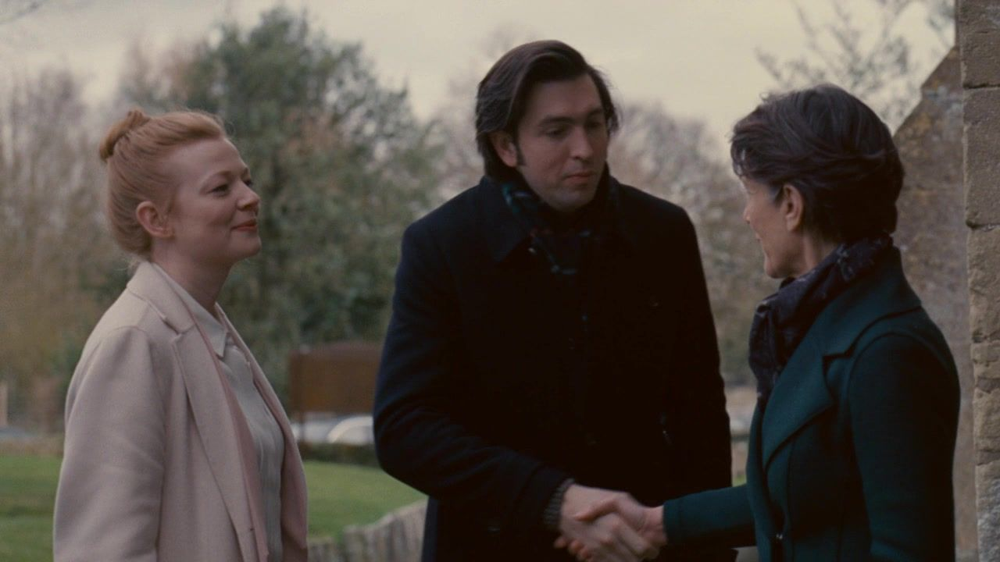
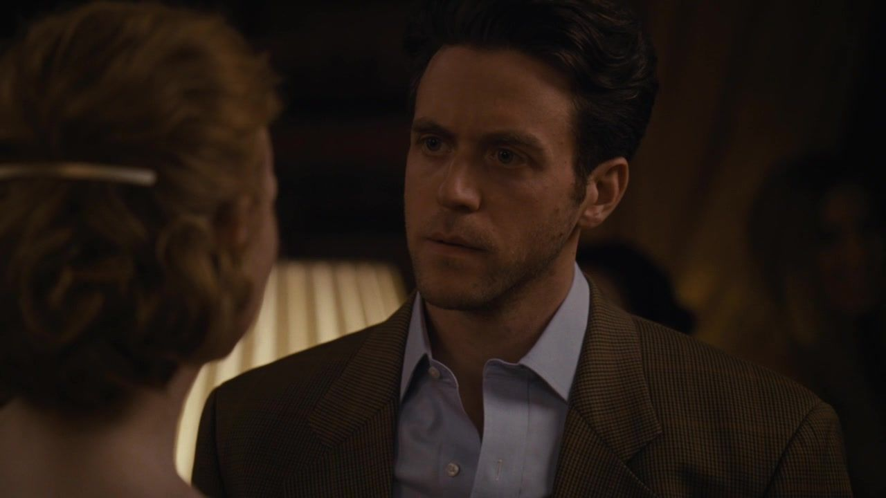
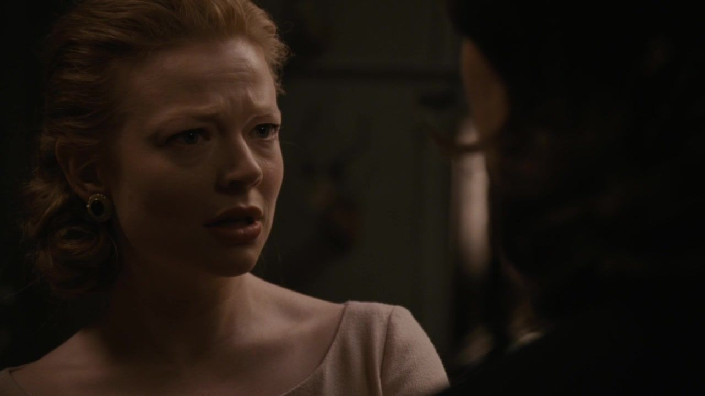
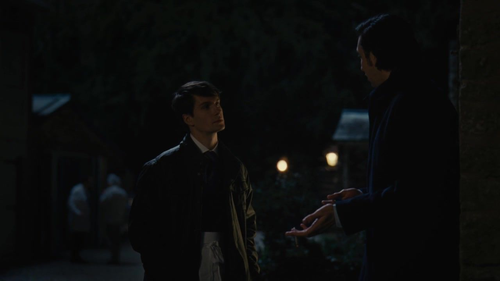
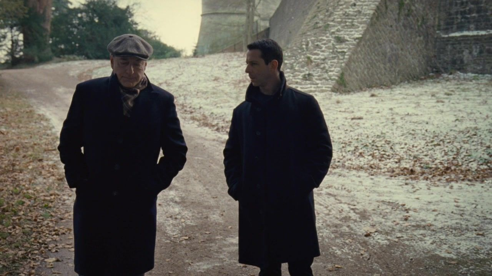
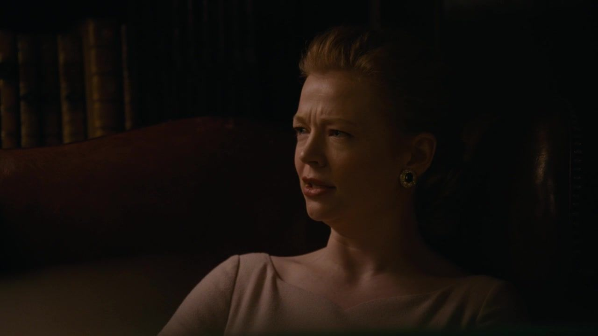
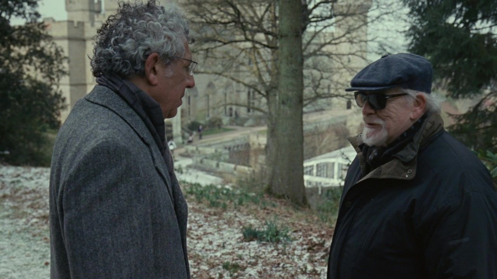

01 / THE STORY
从婚前相聚到最后通牒，
九次承诺的变形。
按本集主线分为三幕；并行发生的谈话与善后，保留其交错关系。
NINE TURNSIACT I / SCENES 01—03
所有人到场母亲、旧情人，也有商业伙伴。
01英国城堡 / 新人抵达
他要一场终于不必证明自己的婚礼。
剧情事实家属与宾客抵达英国城堡，汤姆对服务与仪式投入很高期待；希芙面对父亲此前宣布缺席的处境。 [1] [2]
这一场为什么重要 个人解读
汤姆把仪式看得很重，因为它似乎能一次性确认爱情与家族归属。希芙对父亲缺席的反应则提醒我们，生在其中的人也无法随意摆脱被重视的需要。两人都想从婚礼得到确定，只是等待回应的人不同。
权力的变化婚礼被赋予超过仪式本身的确认功能。
母亲到场 / 旧家庭的另一半
她也会说聪明话，却未必给孩子一个落脚处。

↗希芙、罗曼与母亲卡罗琳在英国相见。｜HBO · 本集截图剧情事实肯德尔、罗曼与希芙的母亲卡罗琳出现，以尖刻玩笑谈家人及婚姻，希芙对母亲的态度感到不快。 [1] [2]
这一场为什么重要 个人解读
母亲没有因为离开洛根的家庭就成为温柔的对照。她同样善于用机敏降低他人认真表达的可能，仿佛一切先被说成玩笑，就不必承受情感的重量。孩子面对的是另一种熟悉：会认出你的弱点，却不一定接住它。
权力的变化换了一位家长，旧的防御仍然熟悉。
宾客之间 / 汤姆遇到内特
他想听见真相，眼前却先出现一套暗示。

↗内特与婚礼宾客交谈的本集镜头。｜HBO · 本集截图剧情事实内特出席婚前聚会，与汤姆接触并暗示自己与希芙的历史；塔比莎也作为罗曼的伴侣到场，让汤姆遭遇派对后的尴尬。 [1] [2]
这一场为什么重要 个人解读
公开场合的熟稔可能比明确告知更难处理。汤姆既看出不对，又担心追问显得自己没有风度或不配被信任。别人能控制说多少，他只能在缝隙里猜；婚礼越接近，承认猜测可能为真越昂贵。
权力的变化秘密由旁人的暗示侵入亲密关系。
这一幕之后人物越齐，婚礼越难只属于新人；亲属与宾客各自携带旧关系。
IIACT II / SCENES 04—06
隐瞒与坦白有人说出秘密，有人否认正在发生的事。
04新人私下 / 一份不对称的坦白
他交出公司的秘密，没有换回她的诚实。

↗希芙在房间里回应汤姆对内特的追问，同场反应镜头。｜HBO · 本集截图剧情事实汤姆追问希芙与内特的关系，希芙否认越界；她转而询问邮轮问题，汤姆向她讲述掩盖与销毁材料的情况。 [1] [2]
这一场为什么重要 个人解读
希芙把一段需要回答的亲密对话转向可用于政治的公司信息。汤姆愿意坦白，也在希望坦白能换来信任。两人给出的东西并不对等：一方承担泄露的职业风险，一方暂时保住自己的私人秘密。
权力的变化坦白被用作交换，却没有得到相同回应。
格雷格与汤姆 / 不被欢迎的提醒
他不愿打错新娘，只能先打断带来消息的人。

↗城堡外：汤姆对试图告知情况的格雷格施压。｜HBO · 本集截图剧情事实格雷格看见希芙与内特的接近，尝试向汤姆提醒。汤姆以肢体攻击和警告阻止他继续说。 [1] [2]
这一场为什么重要 个人解读
否认并非总是因为完全不知道，有时正是因为已经知道到难以承受。格雷格地位较低，又带来会破坏婚礼想象的消息，便成为汤姆可以施压的对象。痛苦值得理解，向更弱者发泄仍需要被判断。
权力的变化无法承担的真相，被转成对传话人的惩罚。
洛根到场 / 缺席威胁被收回
他终于来了，也把外界的目光一起带来。

↗洛根在婚礼场地与肯德尔私下交谈。｜HBO · 本集截图剧情事实洛根担心缺席女儿婚礼的公开观感，最终到场。他与肯德尔谈可能的新职位或业务安排，肯德尔并未因此放下自己的计划。 [1] [2]
这一场为什么重要 个人解读
到场可以含有感情，也可以是形象计算；判断不必强迫二者只留一个。父亲仍习惯用可以给出的岗位处理儿子的疏远，儿子则开始不满足于一份由父亲划定边界的归来。
权力的变化家族重新聚齐，交接问题没有因此缓和。
这一幕之后汤姆的坦白没有换来对等的坦白，洛根的到场也没有让原有冲突消失。
IIIACT III / SCENES 07—09
谈好条件停火可以成交，明天却被资本提前。
07希芙与杰丽 / 邮轮旧案变成条件
她不只要停下攻击，也要未婚夫保持干净。

↗希芙与杰丽谈条件时的同场反应镜头。｜HBO · 本集截图剧情事实希芙以已知的邮轮问题为筹码，与杰丽谈 ATN 停止对吉尔及其亡妻的私人攻击，也要求汤姆不受牵连。 [1] [2]
这一场为什么重要 个人解读
她展现了真实的谈判能力，也把一个涉及受害者的严重问题暂时放进交换。保护未婚夫、保护政治工作与保留家族秘密在这里竟能同时实现；得到好条件，并不代表被当作筹码的问题已经得到处理。
权力的变化严重侵害从需要面对的事实，变成暂缓公开的资源。
洛根与吉尔 / 公开敌人的私下安排
台上不能站在一起，桌边却能找到共同条件。

↗本集尾声：吉尔与洛根谈停火条件。｜HBO · 本集截图剧情事实经希芙斡旋，洛根与吉尔就停止部分相互攻击达成停火，双方各有自己愿意保护的东西。 [1] [2]
这一场为什么重要 个人解读
这场谈话并没有证明政治主张全是假，也确实展示了原则如何被现实边界修剪。对外相互定义为危险的人，在私下都能辨认哪些代价不必再付。最尖锐的对立，未必排除最清楚的交易语言。
权力的变化敌对立场暂时让位于可交换的利益。
兄妹片刻与收购倒计时
他们还能抱在一起，明天却已经另有安排。
 ↗英国城堡的本集结尾外景；船上兄妹互动与收购谈话另见正文。｜HBO · 本集截图
↗英国城堡的本集结尾外景；船上兄妹互动与收购谈话另见正文。｜HBO · 本集截图剧情事实兄妹在小船上有短暂亲近。与此同时，斯图伊与桑迪通知肯德尔，因泄露风险与时机考虑，收购行动必须提前到婚礼当天。 [1] [2]
这一场为什么重要 个人解读
短暂温柔不是虚假，只是无力独自改变他们携带的计划。肯德尔选择资本作为反抗工具后，也要接受资本提出的时间表。他以为自己在争取自主，开始发现重要时刻并不再由自己决定。
权力的变化越过父亲的控制，需要承受另一种约束。
这一幕之后希芙促成政治停火；肯德尔在兄妹短暂亲近之后，仍要面对提前到婚礼当天的收购计划。